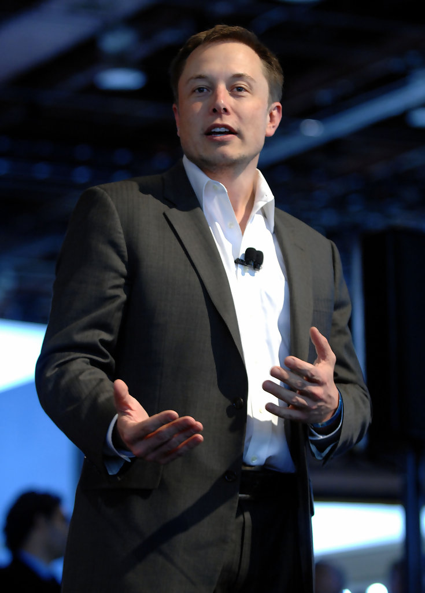

Родился 28 июня 1971 года и вырос в Претории, ЮАР в семье инженера Эррола Маска и его жены, модели Мэй Маск (урожденной Халдеман). Отец был частичным собственником замбийских изумрудных рудников рядом с озером Танганьика. [13][14][15][16] Родители дали ему имя прадеда Джона Илона Халдемана, который родился в 1872 году[17]. Халдеманы — предки его по материнской линии — из швейцарских немцев. Они иммигрировали из Европы в Нью-Йорк во время Войны за независимость США, откуда впоследствии разъехались по Среднему Западу. В 1948 году дед Маска Джошуа Норман Халдеман женился на канадке, учительнице танцев Уиннифред Жозефин Флетчер (Уин). В этот же год у четы родились дочери-близнецы Кэй и Мэй, мать Маска. Дед Маска был заядлым авиатором, путешествовал со всей семьёй на собственном одномоторном самолёте по Северной Америке. В 1950 году жажда приключений заставляет семью покинуть Канаду и перебраться в Южную Африку, где Мэй в 15 лет поступает в школу моделей и начинает выходить на подиум, фотографироваться для журналов и даже становится финалисткой конкурса «Мисс Южная Африка». Мэй и её будущий муж Эррол Маск, отец Илона, выросли вместе в одном районе[18]. Эррол работал инженером-строителем, а Мэй была практикующим диетологом. У Илона есть младший брат Кимбал и младшая сестра Тоска. Мальчик рос замкнутым, любил чтение и, имея фотографическую память и прочитав два комплекта энциклопедий[19], стал всезнайкой, что не прибавило ему популярности. В школе Илон подвергался насилию со стороны сверстников; после одного из избиений ему пришлось восстанавливать сломанный нос[20]. Родители развелись, мать уехала с детьми в Дурбан, но через пару лет Илон решил жить с отцом, к которому впоследствии перебрался и Кимбал. Эррол — тяжёлый, требовательный человек, и жить с ним было нелегко, но мальчики многому научились у отца. Они приходили к отцу на работу класть кирпичную кладку, устанавливать сантехнику, подгонять оконные рамы и прокладывать электропроводку[21]. В возрасте десяти лет Илон получил в подарок свой первый компьютер Commodore VIC-20 и научился на нём программировать. В двенадцатилетнем возрасте он продал за 500 долларов свою первую программу — видеоигру в стиле Space Invaders под названием Blastar[22], в которой игрок обстреливал ряды инопланетян из лазерной пушки[23]. Маск вкладывал средства в акции фармацевтической компании, за которой следил через газеты. На вырученные от продажи акций несколько тысяч долларов он, вопреки протестам родителей, уехал в Канаду[23]. До поступления в университет он жил у родственников в городе Кингстон, провинция Онтарио. Поступил в университет Куинс в Кингстоне, где обучался с 1989 по 1991 год. Затем перевёлся в Пенсильванский университет, чтобы изучать бизнес и физику. Получил степени бакалавра экономики и бакалавра физики[24][25]. В 1995 году поступил в Стэнфордский университет, чтобы получить PhD по прикладной физике и материаловедению. Однако его поступление совпало с интернет-бумом, и он покинул Стэнфорд всего через два дня, чтобы принять в нём участие, основав свою первую компанию, Zip2 Corporation[20][26].
В 1995 году Маск, его брат Кимбал и Грег Коури на средства инвесторов основали компанию Zip2, занимающуюся разработкой программного обеспечения для интернета. Они разместили своё предприятие в небольшом арендованном офисе в Пало-Альто. Компания разрабатывала и продавала интернет-путеводитель по городам для газетной индустрии, с картами, направлениями и жёлтыми страницами. Маск говорит, что до того, как компания стала успешной, он не мог позволить себе квартиру и вместо этого снимал офис, спал на диване, принимал душ в YMCA и делил один компьютер со своим братом. Когда они с Кимбалом не могли договориться о деловых решениях, они решали свои разногласия с помощью борьбы. По словам Маска, «сайт работал днем, а я разрабатывал его ночью, семь дней в неделю, все время». Братья Маск получили контракты с The New York Times и Chicago Tribune', и убедили совет директоров отказаться от планов слияния с CitySearch. Попытки Маска стать генеральным директором, должность которого занимал председатель совета директоров Рич Соркин, были пресечены советом директоров. Compaq приобрела Zip2 за 307 миллионов долларов наличными в феврале 1999 года, а Маск получил 22 миллиона долларов за свою 7-процентную долю.
Генеральным директором и главным инженером компании SpaceX; инвестором, генеральным директором и архитектором продукта компании Tesla; основателем The Boring Company; соучредителем Neuralink и OpenAI; владельцем Twitter[7]. 7 января 2021 года, с состоянием по оценочным данным в 185 млрд $, впервые стал богатейшим человеком планеты, сместив на второе место основателя Amazon Джеффа Безоса[8]. 1 ноября 2021 года стал первым человеком в истории, чьё состояние достигло отметки в 300 млрд $[5][⇨]. Маск родился и вырос в Претории, ЮАР. Он недолго учился в Преторийском университете, а в 17 лет переехал в Канаду. Он поступил в Университет Куинс в Кингстоне и через два года перевелся в Пенсильванский университет, где получил степень бакалавра по экономике и физике. В 1995 году он переехал в Калифорнию, чтобы учиться в Стэнфордском университете, но вместо этого решил заняться бизнесом и вместе со своим братом Кимбалом стал соучредителем компании Zip2, занимавшейся разработкой программного обеспечения для интернета. В 1999 году компания была приобретена Compaq за 307 миллионов долларов. В том же году Маск стал соучредителем онлайн-банка X.com, который в 2000 году конгломеративным путем консолидировался с Confinity и образовал PayPal. В 2002 году компания была куплена eBay за 1,5 миллиарда долларов. В 2002 году Маск основал SpaceX, компанию по производству аэрокосмической техники и оказанию услуг космического транспорта, генеральным директором и главным инженером которой он является. В 2004 году он присоединился к производителю электромобилей Tesla в качестве председателя совета директоров и архитектора проекта, а в 2008 году стал её генеральным директором. В 2006 году он помог создать SolarCity, компанию по предоставлению услуг в области солнечной энергии, которая впоследствии была приобретена Tesla и стала Tesla Energy. В 2015 году он стал соучредителем OpenAI, некоммерческой исследовательской компании, которая занимается продвижением искусственного интеллекта. В 2016 году он стал соучредителем Neuralink, нейротехнологической компании, занимающейся разработкой интерфейсов мозг-компьютер, и основал The Boring Company, компанию по строительству туннелей. Маск предложил идею Hyperloop — высокоскоростную систему транспортировки на вакуумном поезде. В 2022 году стал владельцем Twitter за 44 миллиарда долларов[9]. За выдающиеся заслуги перед наукой 9 мая 2018 года удостоен членства Лондонского королевского общества[10][11]. В декабре 2021 года журнал Time признал Илона Маска «Человеком года»[12].
По состоянию на 14 марта 2022 года Илон Маск был владельцем 9,2 % акций Twitter (73,48 млн акций). Стоимость пакета согласно биржевой стоимости от 1 апреля составляла более 2,8 млрд $, на фоне новости акции Twitter выросли более чем на 25 % на премаркете[53]. 25 апреля 2022 совет директоров Twitter принял предложение Маска по покупке компании за 44 млрд $[9]. В июне Маск отказался от сделки, так как Twitter «не смог или отказался отвечать на многочисленные запросы» о предоставлении данных о поддельных учётных записях[54]. В августе 2022 года Канцлерский суд штата Делавэр обязал Twitter передать Илону Маску дополнительную документацию, касающуюся подсчёта доли ботов и спам-аккаунтов в социальной сети[55]. 11 октября 2022 года Илон Маск потребовал наказать Twitter за уничтожение улик. По мнению предпринимателя, руководство социальной сети заставило увольняемого директора безопасности Питера Затко уничтожить записи, в которых содержалась информация о нарушениях, допущенных руководством компании[56]. 28 октября 2022 года Маск закрыл сделку и возглавил компанию[7]. Состояние 7 января 2021 года Илон Маск стал богатейшим человеком планеты, сместив основателя Amazon Джеффа Безоса на второе место. Состояние Маска на тот момент оценивалось в $185 млрд[8]. 19 февраля 2021 года его состояние увеличилось до $199,9 млрд, и он опять стал самым богатым человеком мира, вновь обогнав основателя Джеффа Безоса ($194,2 млрд), который вернулся на первое место 17 февраля[57]. В рейтингах оценки состояния миллиардеров в режиме реального времени на 3 октября 2021 года Маск находился на первом месте с состоянием $209 млрд по версии Bloomberg[58] и с общим результатом $199 млрд по версии Forbes[59]. 1 ноября 2021 года на фоне роста котировок акций Tesla состояние Маска в моменте превысило $300 млрд, благодаря чему он стал первым человеком в истории, чьё состояние достигло этой отметки[5]. После этого он провёл голосование среди пользователей Твиттера, спросив, следует ли ему продавать 10 % акций компании Tesla, чтобы заплатить налоги. Это было связано с тем, что сенатор-демократ Рон Уайден предложил обязать наиболее состоятельных людей платить 23,8 % с так называемой нереализованной прибыли, то есть прироста стоимости ценных бумаг, вне зависимости от того, продавали ли они часть своих активов или нет. Ещё до выдвижения этого законопроекта Маск сказал, что намерен продать часть акций на сумму в 6 млрд долларов и отдать все деньги Всемирной продовольственной программе ООН (при условии, что её руководство проявит больше прозрачности в том, как именно расходуются средства). Большинство участников опроса высказались за продажу, и Маск продал свои акции на сумму около 5 млрд долларов[60].
| Имя | Должность |
|---|---|
| Ключевые фигуры: | |
| Илон Маск | CEO |
| Председатель | |
| Martinelli Domenico | Дизайнер |
| Yuri Fazio | Дизайнер |
| Джеффри Страубел | Технический директор |